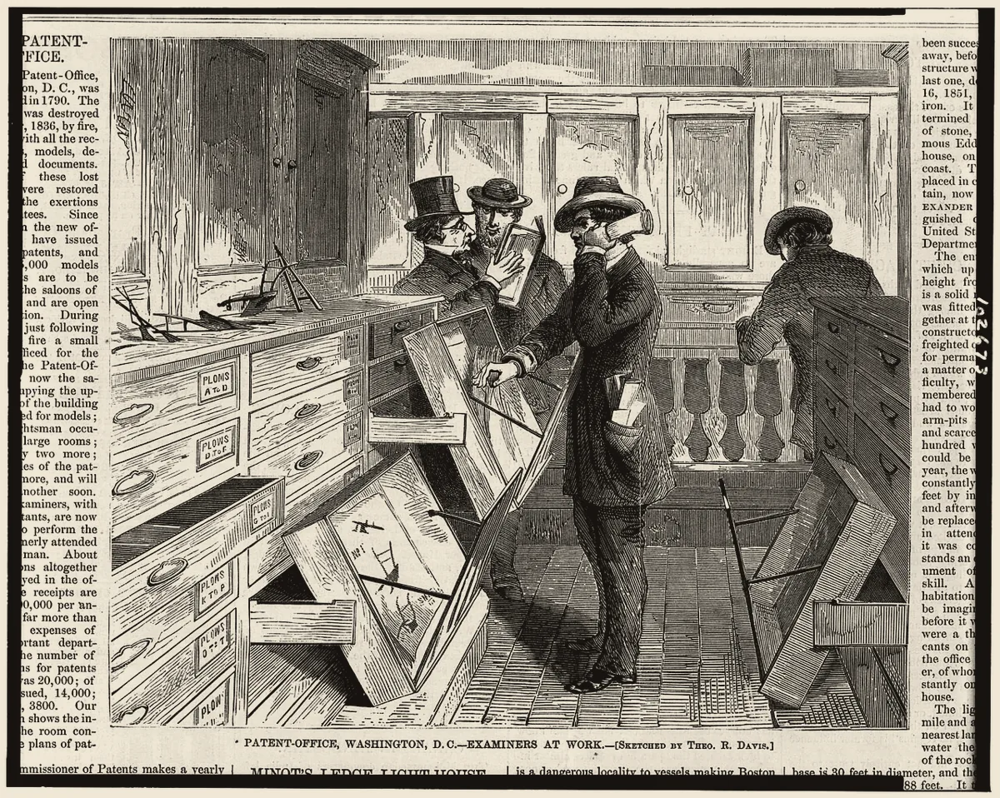

· Edición 57 · 4 min de lectura
Inyección contra el VIH a 40 dólares: Colombia quedó por fuera

Inyección contra el VIH a 40 dólares: Colombia quedó por fuera
En pocas palabras. El 2 de noviembre, Estados Unidos aprobó, de forma provisional, el primer genérico de una inyección que, puesta dos veces al año, evitó casi todas las infecciones por VIH en los ensayos: costará 40 dólares al año en 120 países. Colombia, con unas 14.000 personas diagnosticadas cada año, no está en la lista, y el precio de marca en Estados Unidos es unas 700 veces mayor: el mismo medicamento, con otra dirección. Hay salidas que el país ya usó, como la licencia obligatoria, y decidirlas le toca al Ministerio de Salud.
El dato curioso. En febrero de 2001, la farmacéutica india Cipla le ofreció a Médicos Sin Fronteras el tratamiento triple contra el VIH por 350 dólares al año, menos de un dólar diario. En Estados Unidos y Europa costaba entre 10.000 y 15.000. Respondía a una pregunta del activista James Love: ¿se podía por un dólar al día? Se pudo, y los precios del mundo empezaron a caer. Hoy la discusión se repite, con otra molécula.
Qué está cambiando. El 2 de noviembre, Saiqa Mullick, del instituto Wits RHI, en Johannesburgo, celebró la noticia con una advertencia: un medicamento barato no basta.
La FDA, la autoridad sanitaria de Estados Unidos, aprobó el lenacapavir genérico de la india Dr. Reddy's de forma provisional: allá rige la patente y no se puede vender.
En un ensayo, ninguna de 2.134 mujeres inyectadas se infectó. En otro, con 2.179 hombres y personas de género diverso, se infectaron dos.
Lo que cambia en 10 a 50 años: por primera vez se puede frenar la propagación del VIH, no solo vivir con él. Un modelo de The Lancet HIV de 2024 calculó que, en tres zonas de África, la inyección evitaría entre 12 y 18 de cada 100 infecciones de 2026 a 2035, y hasta 33 con más cobertura.
Fuente: ONUSIDA, hoja informativa mundial de 2026
Ver datos
| millones | |
|---|---|
| 1995 | 3,5 |
| 2010 | 2,1 |
| 2025 | 1,2 |
Desde el pico de 1995, el mundo bajó 65 de cada 100 infecciones. América Latina va al revés: 153.000 en 2025, 25% más que en 2010, según ONUSIDA.
Por qué.
- Dos veces al año. La pastilla diaria funciona si se toma. La inyección va cada seis meses, como la prima.
- Un precio negociado. Gilead, la dueña de la patente, licenció a seis fabricantes para 120 países; Unitaid y sus socios pactaron los 40 dólares.
- Un mapa con huecos. Quedan fuera casi todos los países de ingreso medio de la región, como Colombia, Brasil y México.
Qué significa para Colombia.
- Unas 40 personas al día. Hubo 14.670 diagnósticos nuevos en 2023 y 14.555 en 2024, según la Cuenta de Alto Costo: estable, no a la baja.
- Patentes hasta 2037. Gilead tiene aquí dos, hasta 2034 y 2037, según Médicos Sin Fronteras. Sin registro del Invima, el medicamento solo entra caso por caso.
- Una puerta regional. Desde el 15 de septiembre, Colombia puede comprarlo por el fondo de la OPS, que no publicó precio.
Quién se está preparando. Colombia misma, con otro medicamento. En abril de 2024 dio su primera licencia obligatoria, para el antirretroviral dolutegravir: un genérico, con regalía para el dueño de la patente. Era 30 veces más barato, según Infobae, y el Tribunal Andino le dio la razón al país.
En marzo de 2026, el Ministerio dio el primer paso para medicamentos de la hepatitis C.
Pero ojo.
- Barato no es disponible. Las primeras dosis llegarían a finales de 2026; la mayoría, en 2027.
- La licencia no trae fábrica. Los fabricantes con licencia de Gilead no pueden venderles a los países excluidos, según Médicos Sin Fronteras.
- Prueba antes de cada dosis. Hay que descartar el VIH primero. (Conocimiento general.)
Qué hacer con esto
Para ir pensando. La inyección no tiene fecha en Colombia. La pastilla diaria de prevención, la PrEP oral, está en los lineamientos del Ministerio desde 2023.
Cómo prepararse. Quien tenga más riesgo puede pedirla en su servicio de salud.
Ojo con el cuento. Varios titulares la llaman «vacuna». No lo es: protege mientras se siga aplicando cada seis meses.
Dos lecturas
Las dos posturas sobre el tema, en su mejor versión
Licencia obligatoria cuanto antes. Colombia ya lo hizo y ganó en el Tribunal Andino. Cada año de espera son unos 14.000 diagnósticos nuevos, y la ley permite usar la patente pagando una regalía justa.
Negociar y comprar por la OPS. Una licencia trae pleitos y no trae fábrica. Comprar por el fondo regional puede ser más rápido, y respetar las patentes sostiene la investigación que produjo la inyección.
Quién decide y cuándo
Quién decide. El Ministerio de Salud (compra por la OPS o interés público), la Superintendencia de Industria y Comercio (la licencia) y el Invima (el registro).
Cuándo. No encontramos un trámite abierto ni una fecha.
Cómo participar. (Conocimiento general: cualquiera puede enviar un derecho de petición al Ministerio de Salud.)
La paradoja del día
Lo más absurdo de la edición, en dos líneas
Estados Unidos aprobó un genérico que no se puede vender en Estados Unidos. Colombia, que lo necesita, tampoco lo puede comprar. En eso, al menos, los dos países quedaron iguales.
Para conversar
La pregunta. Si una inyección puede frenar un virus, ¿cuánto debe pesar la patente frente a quienes se infectan mientras se espera?
Para leer más
Libros para seguir con el tema
The Global Politics of Pharmaceutical Monopoly Power, de Ellen 't Hoen (AMB, 2009). Una veterana de la campaña de acceso de Médicos Sin Fronteras cuenta cómo las patentes decidieron quién recibía los medicamentos contra el sida. En inglés.
Loco afán. Crónicas del sidario, de Pedro Lemebel (Seix Barral; primera edición de 1996). El cronista chileno retrata cómo vivió el sida su generación en América Latina. Disponible en Santo & Seña
¿Le interesa ver las fuentes?
Todos los documentos y datos que usamos
29 fuentes: 4 académicas, 4 oficiales, 1 de datos, 4 de organizaciones, 13 de prensa, 3 de referencia.
- Organización Unitaid (2 de noviembre de 2026). U.S. FDA approves first generic injectable lenacapavir for HIV prevention
- Organización Clinton Health Access Initiative (2 de noviembre de 2026). U.S. FDA approves first generic injectable lenacapavir for HIV prevention
- Prensa STAT (2 de noviembre de 2026). FDA approves generic version of HIV prevention shot lenacapavir
- Prensa Managed Healthcare Executive (noviembre de 2026). FDA tentatively approves first generic lenacapavir for HIV prevention in lower-income countries
- Prensa Associated Press, en The Washington Times (2 de noviembre de 2026). Approval of a cheap version of HIV-prevention shot lenacapavir raises hopes in low-income countries
- Académica Bekker y otros, New England Journal of Medicine (2024), ensayo PURPOSE 1. Twice-Yearly Lenacapavir or Daily F/TAF for HIV Prevention in Cisgender Women
- Académica Kelley y otros, New England Journal of Medicine (2024), ensayo PURPOSE 2. Twice-Yearly Lenacapavir for HIV Prevention in Men and Gender-Diverse Persons
- Datos ONUSIDA (julio de 2026). 2026 UNAIDS Global HIV Factsheet
- Prensa Ground News, con el informe de ONUSIDA (2026). HIV caused 1.2 million new cases worldwide in 2025, 43 per cent less than in 2010
- Oficial ONUSIDA (31 de julio de 2026). Informe especial sobre América Latina y el Caribe, presentado en la Conferencia Internacional sobre el Sida (AIDS 2026)
- Académica Wu y otros, The Lancet HIV (2024), estudio de modelación. Health impact, budget impact, and price threshold for cost-effectiveness of lenacapavir for HIV pre-exposure prophylaxis in eastern and southern Africa: a modelling analysis
- Organización Médicos Sin Fronteras (agosto de 2026). Colombia: panorama del acceso a lenacapavir
- Organización Campaña de Acceso de Médicos Sin Fronteras (julio de 2025). Technical brief: Gilead's lenacapavir voluntary license
- Prensa Cambio (septiembre de 2025). Una revolución en el tratamiento del VIH/sida
- Oficial Organización Panamericana de la Salud (15 de septiembre de 2026). La OPS abre una nueva vía de acceso al lenacapavir para la prevención del VIH en América Latina y el Caribe
- Prensa Consultorsalud, con datos de la Cuenta de Alto Costo (diciembre de 2025). Minsalud aclara que no hay aumento de nuevas infecciones por VIH en Colombia
- Prensa RTVC Noticias (diciembre de 2025). MinSalud afirma que el país no registra aumento de infecciones por VIH y la detección temprana mejora
- Oficial Superintendencia de Industria y Comercio (abril de 2024). Comunicado: otorgamiento de una licencia obligatoria por razones de interés público (dolutegravir)
- Prensa Infobae (6 de noviembre de 2024). Colombia recibió respaldo de la Comunidad Andina por licencia obligatoria del fármaco contra VIH: genérico es 30 veces más económico
- Prensa Portafolio. Tribunal Andino falla a favor de Colombia y rechaza demanda por licencia obligatoria de medicamento para VIH
- Prensa Consultorsalud (marzo de 2026). Minsalud abre paso a licencias obligatorias para tratamientos clave de hepatitis C (Resolución 453 de 2026)
- Académica Universidad Externado de Colombia, Departamento de Propiedad Intelectual. Una mirada a la declaratoria de interés público que fundamenta las licencias obligatorias en el contexto colombiano
- Oficial Ministerio de Salud y Protección Social (2023). Lineamiento para la implementación de la profilaxis preexposición (PrEP) en Colombia: memofichas
- Prensa Vanguardia (México). Lenacapavir, la revolucionaria vacuna contra el VIH será 700 veces más barata en países en desarrollo
- Prensa KFF Health News (febrero de 2001). Indian Drug Firm Cipla Offers Low-Priced AIDS Drugs to Doctors Without Borders
- Prensa Quartz. How Indian pharma giant Cipla made AIDS drugs affordable
- Referencia RELX SDG Resource Centre. World AIDS Day (1 de diciembre)
- Referencia Open Society Foundations (ficha del libro). The Global Politics of Pharmaceutical Monopoly Power, de Ellen 't Hoen (AMB, 2009)
- Referencia Santo & Seña (ficha del libro). Loco afán. Crónicas del sidario, de Pedro Lemebel (Seix Barral)
Glosario
Las palabras técnicas, explicadas
- VIH: el virus de la inmunodeficiencia humana; sin tratamiento, causa el sida.
- Lenacapavir: medicamento contra el VIH que, inyectado cada seis meses, evita la infección.
- PrEP: profilaxis preexposición; medicamentos que toma una persona sin VIH para no infectarse.
- Genérico: copia de un medicamento con el mismo principio activo, hecha por otro fabricante.
- Licencia voluntaria: permiso que el dueño de una patente da a otros para fabricar el medicamento, en los países que él escoge.
- Licencia obligatoria: permiso que da el Estado, sin el acuerdo del dueño de la patente y pagándole una regalía, por razones de interés público.
- Aprobación provisional: la que da la FDA cuando el genérico cumple todo, pero la patente aún impide venderlo en Estados Unidos.
Nota metodológica
Cómo se hizo esta edición y qué no pudimos verificar
El criterio nuevo. Desde hoy, el tema debe contestar que sí a esta pregunta antes de cualquier otro filtro: ¿cambia el rumbo de cómo vive la gente, en Colombia o en el mundo, dentro de 10 a 50 años? Para el lenacapavir, sí: por primera vez existe una forma de prevención que podría hacer raras las infecciones nuevas por VIH en una generación, y la pregunta es quién llega a tiempo. La evidencia es una serie de 30 años de ONUSIDA (de 3,5 millones de infecciones en 1995 a 1,2 millones en 2025) y la proyección a diez años del modelo de The Lancet HIV.
Entra por la puerta del cambio de fondo: hay una serie larga, un canal concreto a Colombia (exclusión de la licencia, patentes hasta 2037 y unos 14.000 diagnósticos al año) y algo que se puede decidir ahora (la compra por la OPS o una licencia obligatoria). Lo reactiva la aprobación del genérico, el 2 de noviembre. Es también un tema del mundo y de ciencia. La mezcla de la semana ya no manda: repetimos la puerta del lunes (fondo) porque es el tema más fuerte, no para llenar un hueco.
Revisamos el archivo: el lenacapavir apareció dos veces entre los descartes (26 de septiembre y 26 de octubre), sin hecho que lo reactivara. Nunca fue tema, así que no lleva seguimiento.
Puntaje. De 1 a 3 en cada criterio; peso en la vida y horizonte valen doble (máximo 24). Solo entra un tema con horizonte 3.
| Tema | Puerta | ¿Cambia el rumbo en 10 a 50 años? | Alcance | Peso | Horizonte | Cercanía | Margen | Mirada | Total | Resultado |
|---|---|---|---|---|---|---|---|---|---|---|
| Lenacapavir genérico y la exclusión de Colombia (mundo) | fondo | Sí: puede volver rara la infección por VIH | 3 | 3 | 3 | 2 | 2 | 3 | 22 | Elegido (edición 57) |
| Brecha de adaptación al clima (PNUMA) | fondo | Sí: decide cuánto daño hará el calentamiento | 3 | 3 | 3 | 2 | 2 | 1 | 20 | Pegado a la COP31 y al calor, ya tratados |
| Seis acciones de clima y salud (OMS) | fondo | Sí | 3 | 3 | 3 | 2 | 2 | 1 | 20 | Muy cerca de la edición del 28 de octubre |
| Deforestación mínima en la Amazonía brasileña | avance | Sí: la selva y el agua de la región | 3 | 2 | 3 | 2 | 2 | 2 | 19 | Dato de hace tres semanas; cerca de biodiversidad |
| Emisiones de China, planas o en baja | fondo | Sí: el mayor emisor del mundo | 3 | 2 | 3 | 2 | 1 | 2 | 18 | Sin hecho nuevo desde septiembre |
| Natalidad en Colombia | fondo | Sí: el tamaño y la edad del país | 3 | 2 | 3 | 3 | 1 | 1 | 18 | Sin dato nuevo; cerca de envejecimiento |
| Glaciares de Colombia | fondo | Sí: quedan seis y se reducen | 2 | 2 | 3 | 3 | 1 | 2 | 18 | Sin dato nuevo desde agosto |
| Gases de efecto invernadero en récord (OMM) | fondo | Sí | 3 | 2 | 3 | 2 | 1 | 1 | 17 | Del 27 de octubre; cerca de la COP31 |
| Perspectiva energética de TotalEnergies | fondo | Sí, pero son escenarios de una petrolera | 3 | 2 | 3 | 2 | 1 | 1 | 17 | Mejor esperar el informe de la Agencia Internacional de Energía |
| Elecciones de mitad de período en Estados Unidos (mundo) | contexto | No como transformación medible | 3 | 2 | 2 | 2 | 1 | 1 | 15 | No pasa el horizonte |
| Linces y milanos en Doñana (ciencia) | avance | No | 1 | 1 | 1 | 1 | 1 | 2 | 9 | No pasa el horizonte |
La cercanía del lenacapavir vale 2 y no 3: la inyección todavía no se usa aquí; el canal es el precio y el acceso. El margen vale 2 porque no encontramos un trámite abierto, aunque hay vías conocidas. Ningún otro tema llega a 19 con un hecho nuevo y sin chocar con uno reciente, así que hoy hay una sola edición. Como no hay una decisión concreta en curso, la edición no lleva el recuadro de decisiones.
Hicimos unas 45 búsquedas en español, inglés y portugués. No pudimos abrir los documentos completos, tampoco los ensayos ni la ficha de Médicos Sin Fronteras; trabajamos con resúmenes y resultados de búsqueda. De 29 fuentes, 16 no son de prensa.
Quedó sin verificar o con límites:
- El «unas 700 veces» compara los 40 dólares del genérico con el precio de lista de la versión de marca en Estados Unidos, 28.218 dólares al año. No hay precio anunciado para Colombia.
- Los 14.670 y 14.555 diagnósticos son de la Cuenta de Alto Costo, según la prensa; no leímos su informe. Cuentan diagnósticos, no infecciones: parte se infectó años antes. «Unas 40 al día» es nuestra cuenta.
- El aumento de 25% en América Latina es del informe de ONUSIDA de julio; otras notas sobre el mismo periodo dicen 13%, y la OPS habla de unas 140.000 infecciones al año.
- La cifra de 2010 (2,1 millones) viene de la prensa que resumió el informe de ONUSIDA de 2026; la de 1995 y la de 2025, de la hoja informativa. Informes anteriores daban un pico menor (3,3 millones).
- El modelo de The Lancet HIV es para tres zonas de África, no para Colombia. Un modelo del Instituto Nacional de Salud Pública de México, hecho con una organización que promueve el acceso, estima hasta 68% menos infecciones en cinco países de la región, entre ellos Colombia, en el mejor escenario; no lo usamos en el texto por ese vínculo.
- La vía de la OPS incluye a Colombia, pero Médicos Sin Fronteras advierte que comprar por ese fondo depende de que el medicamento pueda entrar al país, y hoy no tiene registro del Invima.
- La fecha de las primeras dosis cambia según la fuente: la AP dice finales de 2026; Dr. Reddy's habla de 2027.
- Las patentes hasta 2034 y 2037 son del análisis de Médicos Sin Fronteras; no las revisamos en la base de la Superintendencia.
El grabado, de 1869, muestra a los examinadores de la Oficina de Patentes de Estados Unidos; es un grabado en madera a partir de un dibujo de Theodore R. Davis, que conserva la Biblioteca del Congreso y tomamos de Wikimedia Commons. Lo elegimos porque la historia de hoy es, sobre todo, una historia de patentes. Antes probamos una lámina de la primera jeringa de Pravaz, de 1852, que resultó ser una fotografía impresa.
Los libros: Loco afán está en Santo & Seña (revisamos su ficha); el de Ellen 't Hoen no, y va sin enlace. Autores, años y editoriales los tomamos de la ficha de la tienda y de la página de Open Society Foundations.